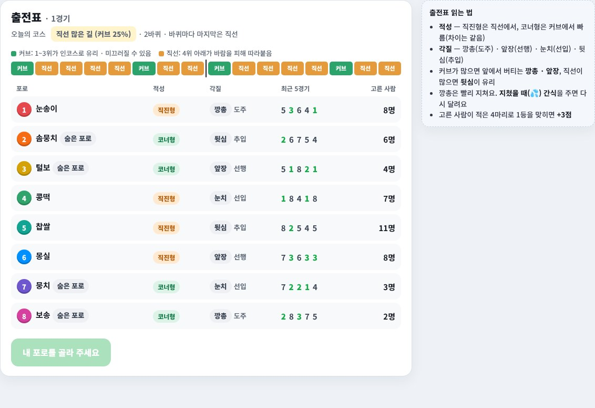
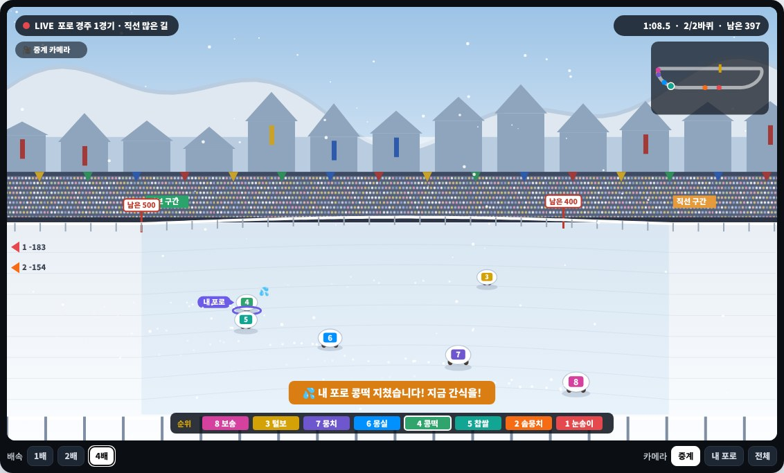
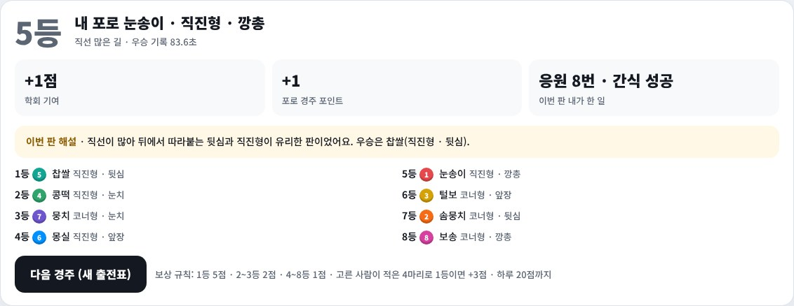

보기만 해도 내가 한 일이 생기는 3분
영상은 보기만 하고 끝납니다. 포로 경주는 고르고, 응원하고, 간식을 주는 세 번의 선택으로 관객을 참여자로 만듭니다.
적성 · 각질 · 최근 성적과 오늘의 코스를 읽으면 맞힐 확률이 올라갑니다. 하지만 정답은 없습니다.
간식은 지쳤을 때 줘야만 효과가 납니다. 응원은 뒤처졌을 때만 통합니다.
같은 포로를 고른 사람끼리 응원단이 됩니다. 경쟁 상대가 아니라서 부담 없이 말을 걸 수 있습니다.
5분마다 열리는 약 3분짜리 한 판
광장의 포로 서킷에서 5분 간격으로 열립니다. 큐를 기다리는 동안 한 판을 보기에 알맞은 길이입니다.
- 오늘의 코스(커브 · 직선 배치) 공개
- 포로 8마리의 적성 · 각질 · 최근 5경기 · 고른 사람 수
- 한 마리를 골라 응원단에 들어감(무료)
- 서킷 2바퀴를 포로들이 알아서 달림
- 응원: 3초에 한 번, 5~8위일 때만 효과
- 간식: 한 판에 한 번, 지쳤을 때만 효과
- 내 포로 순위에 따라 학회 기여 · 포인트
- 숨은 포로로 1등이면 +3점
- 광장 게시판 순위표에 반영
세 화면, 프로토타입 그대로
아래 그림은 실제로 동작하는 프로토타입의 화면입니다. 같은 엔진으로 시뮬레이션도 돌렸습니다.



순위를 정하는 다섯 가지
구간마다 아래 다섯 가지가 곱해져 속도가 정해집니다. 출전표에 보이는 것(적성 · 각질 · 코스)이 가장 크게, 보이지 않는 것(컨디션 · 미끄러짐)이 변수로 작용합니다.
| 요소 | 규칙 | 출전표에 |
|---|---|---|
| 코스 | 바퀴당 8구간, 2바퀴. 매 판 직선 많은 길(커브 25%) · 보통 길(50%) · 커브 많은 길(75%) 중 하나. 바퀴마다 마지막 구간은 직선(홈 직선). 기본은 눈길 | 보임 |
| 적성 | 직진형은 직선에서 빠르고 커브에서 느림, 코너형은 그 반대. 빠르고 느린 폭은 같음(±2.5%) | 보임 |
| 각질 | 깡총(도주) 처음부터 앞으로, 빨리 지침 · 앞장(선행) 선두 뒤를 따르다 막판에 앞섬 · 눈치(선입) 중간에서 버티다 따라붙음 · 뒷심(추입) 힘을 아끼다 마지막 직선에서 폭발(커브에서는 덜 폭발) | 보임 |
| 자리 | 인코스: 커브에서 1~3위는 안쪽을 잡아 +4% · 바람막이: 직선에서 4위 아래는 앞 포로 뒤에 붙어 +4%. 그래서 커브가 많으면 앞에서 버티는 포로, 직선이 많으면 뒤에서 오는 포로가 유리 | 읽는 법으로 안내 |
| 변수 | 미끄러짐: 눈길 커브에서 모든 포로가 같은 확률로 1.2초 멈춤 · 컨디션: 판마다 포로별로 ±7%(보이지 않음) | 안 보임 |
관객이 할 수 있는 것
| 행동 | 규칙 | 의도 |
|---|---|---|
| 내 포로 | 출전표에서 한 마리를 고름. 무료, 한 판에 한 마리. 고르지 않으면 관전만 | 한 마리라 감정 이입이 쉬움 |
| 응원 | 감정표현 키(E), 3초에 한 번. 최근 3초 응원 비율이 높을수록 5~8위일 때만 1.6초 질주(+22%) 확률이 오름. 질주 뒤 6초는 다시 질주 못 함. 1~4위에서는 효과 없음 | 꼴찌를 구하는 응원, 1등을 만드는 응원은 아님 |
| 간식 | 한 판에 한 번. 내 포로가 지쳤을 때(💦) 주면 기운 25를 되찾고 원래 속도로 달림. 지치기 전에 주면 효과 없음(느려지지는 않음). 포로마다 회복은 한 번만 — 같은 응원단에서 먼저 준 사람이 「간식 성공」 | 지켜보다 타이밍을 잡는 손맛 |
| 관전 | 관람 구역에 서 있으면 내 캐릭터는 두고 카메라만 경주로로. 큐가 잡히면 그대로 떠나고, 고른 포로는 남아 자동 정산 | 떠나도 손해 없음 |
보상
| 내 포로 순위 | 학회 기여 · 포로 경주 포인트 |
|---|---|
| 1등 | 5점 · 고른 사람이 가장 적은 4마리 중 하나였다면 +3점 |
| 2~3등 | 2점 |
| 4~8등 | 1점(참여) |
| 하루 상한 | 1:1 구역과 합쳐 20점까지. 포인트는 광장 꾸밈과 교환(돈으로 살 수 없고 현금으로 바꿀 수 없음) |
| 순위표 | 1등을 맞힌 횟수 순 → 같으면 3등 안에 든 횟수 → 참여 판 수. 매주 월요일 초기화, 주간 상위 10%는 학회 기여 20점 추가 |
개발에 넘기는 기본값
0.1초마다 계산합니다. 아래 값은 6장의 시뮬레이션으로 조정한 결과입니다.
| 항목 | 값 |
|---|---|
| 바퀴 길이 · 바퀴 수 · 구간 | 1,000 · 2바퀴 · 바퀴당 8구간 |
| 기본 속도 | 초당 22 (우승 기록 약 84초) |
| 적성 | 맞는 구간 ×1.025 · 안 맞는 구간 ×0.975 |
| 인코스 · 바람막이 | 커브 1~3위 ×1.04 · 직선 4~8위 ×1.04 |
| 미끄러짐 | 커브에서 초당 1.2% · 1.2초 정지 |
| 컨디션 · 순간 흔들림 | 판마다 ±7% · 0.1초마다 ±3% |
| 각질 | 초반 0~35% | 중반 ~75% | 막판 |
|---|---|---|---|
| 깡총 | ×1.10 | ×1.00 | ×0.96 |
| 앞장 | ×1.04 | ×1.00 | ×1.01 |
| 눈치 | ×0.99 | ×1.02 | ×1.03 |
| 뒷심 | ×0.94 | ×1.00 | ×1.16 (커브 ×0.92 추가) |
기운(지침)
| 항목 | 값 |
|---|---|
| 기운 | 100에서 시작. 초당 1.0 × (각질 배수)^7만큼 줄어듦(막판 폭발은 아껴 둔 힘이라 소모 없음). 빨리 달릴수록 훨씬 빨리 지침 |
| 지침 | 0이 되면 💦, 속도 ×0.84. 간식을 받기 전까지 계속 |
| 간식 | 지친 상태에서 받으면 기운 25로 회복, 지침 해제. 포로당 한 판에 한 번 |
| 결과(시뮬레이션 평균) | 깡총은 거의 매 판 경주 중반 넘어 지침 → 간식이 승부를 가름. 앞장은 절반쯤, 뒷심은 거의 안 지침(대신 초반이 느림) |
의도대로 움직이는지, 4,000판씩 돌려 봤다
프로토타입과 같은 엔진으로 코스마다 4,000판을 시뮬레이션했습니다. 포로는 8마리, 한 마리의 평균 1등 확률은 12.5%입니다(점선).
시뮬레이션 조건 자세히
코스마다 4,000판. 포로 8마리의 적성 · 각질은 무작위, 관객 응원 비율도 무작위. 다른 응원단은 지친 뒤 0.5~4초 사이에 간식을 줌. 간식 실험은 보통 길의 코너형 깡총, 응원 실험은 보통 길의 직진형 눈치 한 마리를 두고 조건만 바꿔 각 4,000판. 엔진 코드는 저장소 tools/poro-race/engine.js.
경주 밖에서 생기는 일들
| 상황 | 처리 |
|---|---|
| 경주 중 큐가 잡힘 | 바로 떠남. 고른 포로는 남아 결과가 나오면 자동 정산, 게임이 끝난 뒤 알림. 간식은 다른 응원단이 줌 |
| 경주 중 접속이 끊김 | 위와 같음. 경주는 서버에서 계산하므로 결과에 영향 없음 |
| 출전표 60초 안에 안 고름 | 관전만. 보상 없음(참여 1점도 없음) |
| 경주 중에 광장에 들어옴 | 관전만 가능, 다음 판 출전표부터 참여 |
| 같은 포로의 응원단 여럿이 간식 | 포로당 회복은 한 번. 지친 뒤 가장 먼저 준 사람에게 「간식 성공」, 늦게 준 사람에게는 「이미 먹었어요」 안내 |
| 지치기 전에 간식 | 효과 없음, 이번 판 간식은 쓴 것으로 처리. 「아직 안 지쳤어요 — 💦가 뜰 때가 타이밍」 안내 |
| 동시 골인 | 0.1초 단위 기록. 같으면 공동 순위, 보상은 높은 순위 기준 |
| 응원 매크로 | 3초 대기는 서버에서 판정. 대기 중 입력은 무시. 응원은 비율로 계산해 사람이 많아도 효과 크기는 같음 |
| 광장 인원이 적음(10명 아래) | 응원이 비율이라 효과는 그대로. 숨은 포로 +3점은 4마리가 동률이면 고른 수가 0명인 포로만 해당 |
| 하루 20점 초과 | 점수는 0, 포인트는 그대로 쌓임 — 계속 보러 올 이유는 남김 |
만들 때 필요한 것, 출시 뒤 볼 것
| 데이터 | 필드 |
|---|---|
| 포로 | id · 이름 · 털 색 · 적성 · 각질 · 최근 5경기 |
| 경주 | 경주 id · 시작 시각 · 코스(16구간 배열) · 포로 8마리 · 컨디션 값 · 결과 순위 · 기록 |
| 참여 | 유저 id · 경주 id · 고른 포로 · 응원 횟수 · 간식 시각 · 간식 결과 · 받은 점수 |
| 지표 | 보는 이유 · 목표 |
|---|---|
| 광장 인원 중 참여율 | 보기만 하던 사람이 고르는가 |
| 간식 성공률 | 타이밍이 너무 쉽거나 어렵지 않은가 |
| 각질별 1등 비율 | 6장의 예상과 같은가(한 각질이 25%를 넘으면 조정) |
| 숨은 포로 선택 비율 | 출전표를 읽고 고르는가, 인기만 따라가는가 |
| 큐 대기 중 이탈 감소 | 대기 시간을 즐겁게 바꿨는가(제안서 5-2 지표와 연결) |